ClinicusMed · Dossiê Clinicus — Padrão de Excelência
As articulações são constituídas por um conjunto de formações anatômicas que unem 2 ou mais ossos. Sua integridade total facilita a vida de relação e a harmonia dos movimentos.
| Critério | Categorias |
|---|---|
| Grau de movimento | Sinartrose (imóveis) · Anfiartrose (semimóveis) · Diartrose (móveis) |
| Tecido articular | Fibrosas (tecido fibroso) · Cartilaginosas (cartilagem) · Sinoviais (líquido sinovial) |
Suturas: ossos que procedem diretamente de um esboço membranoso, unidos por tecido fibroso de fibras curtas — ficam imobilizados. Encontradas entre os ossos do crânio e da face.
Classificação das suturas por configuração das superfícies articulares:
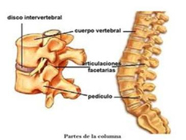
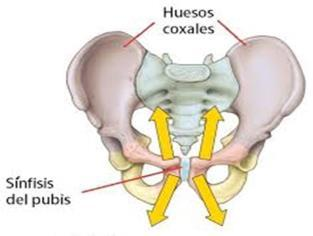
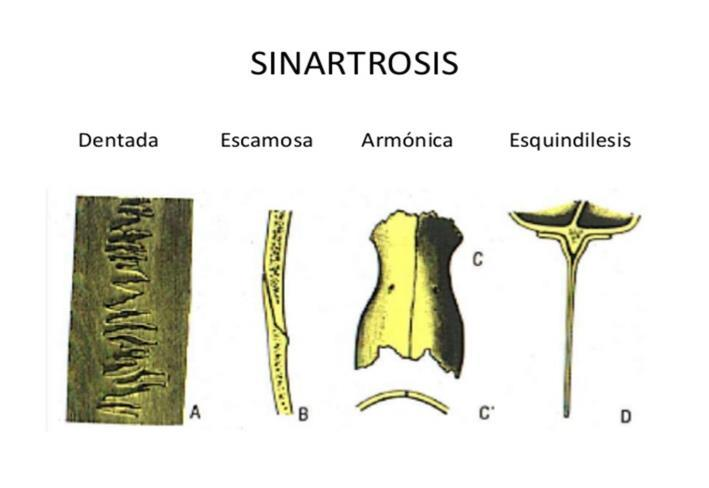
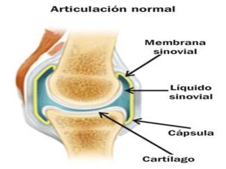
| Tipo de Sutura | Característica | Exemplo |
|---|---|---|
| Plana | Superfícies planas em contato | Ossos nasais |
| Escamosa | Superfícies em bisel, sobrepostas | Temporoparietal |
| Dentada | Bordas serrilhadas, entrelaçadas | Sutura coronal |
| Esquindilese | Uma superfície em crista se articula com uma ranhura | Vômer e esfenoide |
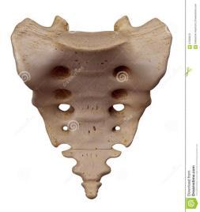
As superfícies articulares têm formações de cartilagem hialina ou fibrocartilaginosa interpostas entre os ossos — carecem de cavidade sinovial e têm ligamentos periféricos ao redor da articulação.
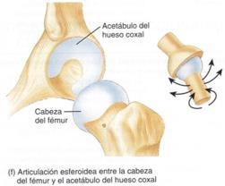
Superfície articular: forma variável conforme a articulação. Quando as superfícies em contato não são planas, a convexidade de uma peça óssea corresponde a uma superfície configurada em sentido inverso (côncava).
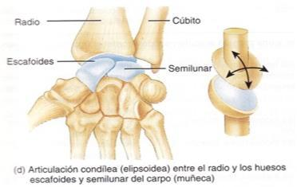
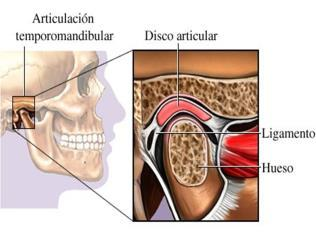
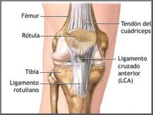
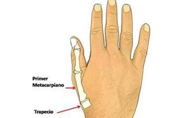
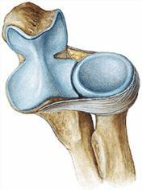
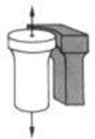
| Gênero | Característica | Exemplo |
|---|---|---|
| Esferoidea (enartrose) | Superfícies esféricas ou quase esféricas | Coxofemoral, escapulo-umeral |
| Elipsoidea (condílea) | 2 segmentos elipsoidais dispostos em sentido inverso. 2 eixos de movimento | Radiocarpiana |
| Selar (encaixe recíproco) | Cada superfície é côncava num sentido e convexa noutro — forma de sela | Trapeziometacarpiana |
| Trocoide | Segmentos de cilindro (1 convexo, 1 côncavo), formando um pivô | Radiocubital proximal |
| Ginglimo (troclear) | Uma superfície em forma de polia, encaixa a saliência da oposta. Função de dobradiça | Umerocubital (cotovelo) |
| Plana (artrodia) | Superfícies mais ou menos planas, deslizam uma sobre a outra | Apófises articulares vertebrais |
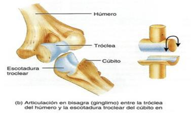
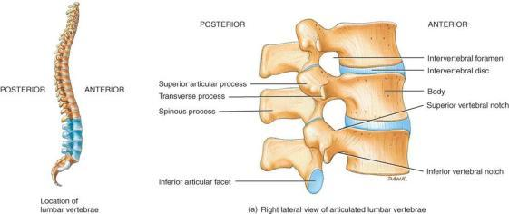
| Subgênero | Característica | Exemplo |
|---|---|---|
| Bicondílea | 2 superfícies convexas deslizam uma sobre a outra | Temporomaxilar |
| Bicondílea Dupla | 2 côndilos de uma epífise entram em contato com superfícies mais ou menos côncavas | Femorotibial (joelho) |
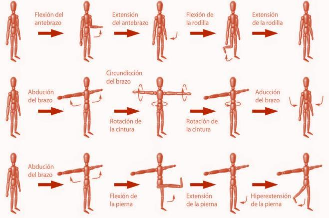
Vamos acompanhar um jogador de vôlei com luxação do ombro após uma queda, relacionando o caso ao tipo de articulação envolvida. O caso evolui em 3 níveis — clica em cada um pra ver como as coisas vão se desenrolando.
O sistema guarda, no seu navegador, quais cards você já sabe bem e quais precisam voltar mais cedo — cada vez que você avalia um card, ele recalcula quando ele deve voltar.
10 questões, do mais básico ao mais puxado. Escolhe uma alternativa, depois clica em "Ver comentário completo" — vale a pena ler até quando você acerta, porque o comentário explica cada alternativa, não só a certa.
Todas as imagens desse capítulo, reunidas num só lugar pra revisão rápida.